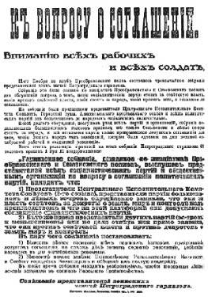
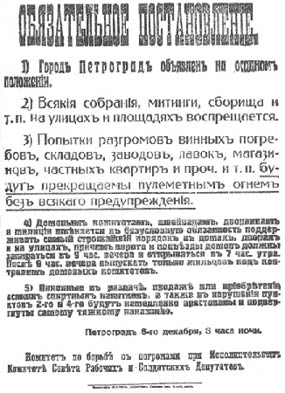
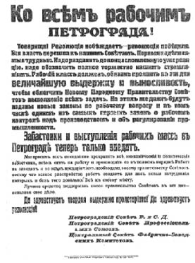
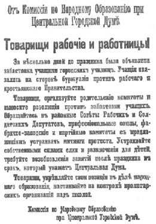

BÖLÜM XI

İKTİDARIN ÖRGÜTLENMESİ (1)


RUSYA’DA YAŞAYAN HALKLARIN HAKLARINA DAİR BİLDİRİ
... Bu yılın Haziranında toplanan Birinci Sovyetler Kongresi Rusya’da yaşayan halkların kendi kaderlerini kendilerinin tayin etmesi hakkını tanımıştı.
Kasımda toplanan İkinci Sovyetler Kongresi de Rusya’da yaşayan halkların bu vazgeçilmez hakkını daha kesin ve kararlı olarak doğrulamıştır.
Bu kongrelerin dileklerini yerine getirmek isteyen Halk Komiserleri Konseyi aşağıdaki ilkeleri, uluslar sorunu konusundaki çalışmalarına temel olarak almayı kararlaştırmış bulunmaktadır:
(1) Rusya’da yaşayan halklar eşit ve egemendir.
(2) Rusya’da yaşayan halkların, ayrılmaya ve bağımsız bir devlet kurmaya varacak kadar serbestçe kendi kaderlerini kendilerinin tayin etme hakları vardır.
(3) Hangisi olursa olsun, bütün ulusal ya da ulusal-dinsel imtiyazlar ve gerilikler kaldırılacaktır.
(4) Rus topraklarında oturan ulusal azınlıklar ve etnik gruplar serbest olarak gelişeceklerdir.
Gerekli kanunlar Uluslar Komisyonu’nun kurulmasından sonra hemen hazırlanmaya başlanacaktır.
Rus Cumhuriyeti adına
Uluslar Halk Komiseri Halk Komiserleri Konseyi Başkanı
ÇUGAŞVİLİ-STALİN
V. ULYANOV
(Lenin)
Kiev’deki Merkezi Rada Meclisi Ukrayna’yı hemen bağımsız bir cumhuriyet olarak ilan etti. Finlandiya hükümetinin Helsingsfors senatosu da aynı şeyi yaptı. Sibirya ve Kafkasya’da birdenbire bağımsız “hükümetler” kuruldu. Polonya Baş Askerî Komitesi de Rus ordusundaki Polonya askerlerini çarçabuk topladı, komiteleri kaldırdı ve sert bir disiplin kurdu.
Bütün bu “hükümet”lerin ve “hareket”lerin iki ortak yanı vardı: Hepsinin başında mülk sahibi sınıflar bulunuyor, hepsi de Bolşeviklerden korkuyor ve tiksiniyordu.
Bu büyük değişim karışıklığı içinde Halk Komiserleri Konseyi yavaş yavaş sosyalist düzenin iskeletini kuruyordu: Sosyal Sigorta ve İşçi Denetimi Kararnameleri, Volost Toprak Komiteleri, Rütbe ve Unvanların Kaldırılması, Mahkemelerin İlgasıyla Halk Mahkemelerinin Kurulması kararnameleri çıkarıldı (2).
Ordular, filolar durmadan delege gönderiyor, “Yeni halk hükümetini sevinçle selamlıyorlar”dı.
Bir gün Smolni’nin önünde, cepheden yeni gelmiş, üstleri başları perişan, yırtık bir alay gördüm. Zayıf, soluk yüzlü askerler büyük kapıların önünde toplanmış, sanki içeride Tanrı varmış gibi binanın içine bakıyorlar. Bazıları kapının üstündeki İmparatorluk kartalını gösterip gülüyor... Kızıl Muhafızlar nöbet değiştirmeye geldiler. Bütün askerler başlarını çevirip onlara hayretle baktılar. Onlardan çok söz edildiğini duymuşlar, ama daha görmemişlerdi. İçten güldüler ve nöbetçilere yaklaştılar, yarı alaylı yarı hayran, omuzlarını okşadılar... Geçici Hükümet artık yoktu. 15 Kasımdan sonra başkent kiliselerinde Geçici Hükümet için artık dua edilmiyordu. Ama Lenin’in Çayika’da söylediği gibi, “Bu sadece iktidarın ele geçirilmesine bir başlangıç”tı.
Ülkenin ekonomik hayatını hâlâ elinde tutan, şimdilik silahları elinden alınmış bulunan muhalefet, Rusların o büyük ortak çalışma dehasıyla örgütlenmeye, sovyetleri engellemeye, parçalamaya ve gözden düşürmeye çalışıyordu.
Hükümet memurlarının grevi gayet iyi örgütlenmiş, bankalar ve ticari kurumlar tarafından finanse edilmişti. Bolşeviklerin hükümet makinesini ele geçirmek için yaptıkları her harekete karşı konulmuştu.
Troçki Dışişleri Bakanlığı’na gitmiş; memurlar kendisini tanımamışlar, kapılarını kilitlemişler. Kapılar zorla açılınca istifa etmişler. Troçki arşivlerin anahtarlarını istemiş. Ancak işçiler gelip kilitleri kırmaya başlayınca anahtarları vermişler.
Eski Dışişleri Bakan Yardımcısı Nekratov’un gizli anlaşmaları alıp ortadan kaybolduğu ancak o zaman anlaşılmış...
Şliyapnikov Çalışma Bakanlığı’nı devralmaya çalışıyordu. Bina zehir gibi soğuktu. Sobaları yakacak insan yoktu. Yüzlerce memurun içinden biri çıkıp Bakan’a odasının nerede olduğunu göstermedi.
13 Kasımda Sağlık Komiseri (Yardım İşleri ve Kamu Kurumları Dairesi) olarak atanan Aleksandra Kollantay bakanlık memurlarının greviyle karşılaştı. (Yalnız kırk kadar memur katılmamıştı.) Hemen o gün büyük şehirlerin yoksul kurumlarında ne kadar insan varsa birdenbire açlıklarını duydular; aç sakatların, yetimlerin temsilcileri mosmor yüzleriyle binayı kuşattılar. Gözlerinden yaşlar akan Kollantay memurları tutuklamak zorunda kaldı ve daireyle kasanın anahtarlarını vermedikçe memurları salıvermedi. Anahtarları alınca gördü ki eski Bakan Kontes Panina, Kurucu Meclis’in emri olmadıkça paraları kimseye teslim etmeyeceğini söylemiş ve kasada ne kadar para varsa alıp gitmiş (3).
Tarım, Levazım, Maliye bakanlıklarında da aynı şeyler olmuştu: Memurlardan, görevlerinden ve emeklilik haklarından vazgeçmeleri istendiği zaman memurlar, ya görevlerine gelmiyorlar ya da sabotaja başvuruyorlardı... Bütün aydın sınıf Bolşevik düşmanı olduğu için Sovyet hükümeti personel bulamıyordu.
Özel bankalar kapalı kalmakta direniyorlardı. YaInız arka kapıları vurgunculara açıktı. Bolşevik komiserleri geldiği zaman memurlar defterleri kapatarak, paraları alıp gidiyorlardı. Merkez Bankası’nın bütün memurları grevdeydi. Yalnız kasalardan ve paralardan sorumlu olan memurlar çalışıyorlardı. Bu memurlar da Smolni’nin hiçbir emrini yerine getirmiyordu. Kurtuluş Komitesi ile Şehir Duması’na bol bol para veriyorlardı.
Bir komiser, bir gün, yanına Kızıl Muhafız alarak, hükümet masraflarını karşılamak üzere para istemek için bankaya geldi. Birinci gelişinde, bankada çok sayıda Şehir Duması üyesi, Menşevik ve Sosyalist Devrimci lider bulunuyordu. Hepsi de bu hareketin ne gibi bir sonuç doğuracağını öyle bir anlattılar ki, komiser korkup gitti. İkinci gelişinde elinde bir mektup vardı. Mektubu yüksek sesle okumaya başladı; ama üyelerden biri mektupta tarih ve damga bulunmadığını ve bunun da Rusların “vesika”lara karşı geleneksel saygısına aykırı olduğunu belirtti. Komiser yine eli boş dönmek zorunda kaldı.
Devlet Hazine Bonoları Dairesi’nin memurları defterlerini imha ettiler, böylece Rusya’nın dış ülkelerle olan ya da dış ülkelerle ilişkilerine ait bütün kayıtlar ortadan kalkmış oldu.
Levazım komiteleri, belediyelere ait Kamu Kurumları İdaresi ya çalışmıyor ya da işleri sabote ediyorlardı. Şehir halkının acil ihtiyaçlarını karşılamak zorunda kalan Bolşevikler, kamu hizmetlerini yönetmeye kalkınca bütün memurlar derhal grev ilan ettiler ve Duma Bolşeviklerin “belediye özerkliğini ihlal ettiğine” dair telgraflar yağdırdı Rusya’nın her yanına...
Askerî karargâhlarda, Savaş ve Donanma bakanlıklarında eski memurlar görevlerine devam etmeye razı olmuşlardı. Ordu komiteleri, Yüksek Komuta Kurulu, cephedeki askerlerin aleyhine bile olsa, yine de sovyetlere elinden gelen zorlukları çıkarıyordu. Vikjel sovyetlere düşmandı, sovyet askerlerini ulaştırmıyordu; Petrograd’dan çıkacak her tren bu yüzden zorla ele geçiriliyor, demiryolu memurları her defasında tutuklanıyorlardı. Bunun üzerine Vikjel, memurlar serbest bırakılmadığı takdirde derhal genel greve gitme tehdidinde bulunuyordu...
Smolni açıkça güçsüzdü. Gazeteler, yakıt yokluğundan ötürü Petrograd’daki bütün fabrikaların üç hafta içinde kapanacağını yazıyorlardı; Vikjel 1 Ocaktan itibaren trenlerin işlemeyeceğini bildirdi; Petrograd’da yalnız üç günlük yiyecek vardı ve arkası gelmiyordu; ve cephede ordu açtı... Kurtuluş Komitesi ile çeşitli merkez komiteleri ülkenin her yanına bildiriler gönderiyorlar, halkı hükümet emirlerini önemsememeye çağırıyorlardı. Müttefik elçileriyse ya soğuk bir umursamaz1ık ya da açıkça düşmanlık gösteriyorlardı...
Bugün kapatılan bir muhalefet gazetesi yarın başka bir adla çıkıyor, yeni rejimi acı bir dille alaya alıyordu (4). Novaya Jizn bile yeni hükümeti “bir demagoji ve güçsüzlük karışımı” olarak niteliyordu.
Halk Komiserleri Hükümeti (diyordu) lüzumsuz yere gösterdiği acelenin bataklığına her gün biraz daha batıyor. İktidarı kolayca eline geçiren... Bolşevikler iktidarı kullanamıyorlar.
Mevcut hükümet mekanizmasını yönetemedikleri gibi, sosyal tecrübe sahiplerinin teorilerine göre kolayca ve serbestçe işleyebilecek yeni bir hükümet de kuramıyorlar.
Bolşevikler kısa bir süre önce kendi büyüyen partilerini yönetecek kadar insan bulamamışlardı. –Bu iş her şeyden önce, konuşmacıların ve yazarların işiydi– Karışık ve çeşitli hükümet işlerini yönetecek yetişmiş insanları şimdi nereden bulacaklar?
Yeni hükümet birtakım işler yapıyor ve korkutuyor, ülkenin her yerine kararnameler gönderiyor. Bu kararnamelerin hepsi de birbirinden radikal, birbirinden “sosyalist”. Daha çok çocuklarımızın sersemleştirilmesi için kaleme alınmış olan bu kâğıt üzerinde “sosyalizm”de günün acil sorunlarını çözümlemek için gereken ne istek ve ne de yetenek var!
Bu arada Vikjel’in yeni bir hükümet kurulması için topladığı konferans gece gündüz çalışıyordu. Her iki taraf ana ilkelerde anlaşmaya varmıştı; Halk Konseyi’ne kimlerin alınacağı tartışılıyordu; kabine aşağı yukarı kurulmuştu. Çernov Başbakan oluyordu; Bolşevikler büyük bir azınlık olarak kabineye alınıyorlardı. Yalnız Lenin ile Troçki kabineye girmeyeceklerdi, Menşevik ve Sosyalist Devrimci partilerin Merkez Yürütme Komiteleri ile Köylü Sovyetleri Yürütme Komitesi, Bolşeviklerin “canice politikaları”na şaşmaz bir şekilde karşı olmakla beraber, “kardeş kanı dökülmesini önlemek üzere,” Bolşeviklerin Halk Konseyi’ne alınmalarına itiraz etmemeye karar verdiler:
Ama Kerenski’nin kaçması ve sovyetlerin her yerde başarı kazanması durumu değiştirdi. Çayika’nın 16 Kasımda yaptığı toplantıda, Sol Sosyalist Devrimciler, Bolşeviklerin, öteki Sosyalist partilerle bir koalisyon hükümeti kurmaları üzerinde direndiler; yoksa Askerî Devrimci Komite’den ve Çayika’dan çekileceklerdi. Malkin dedi ki: “Her iki taraftaki yoldaşlarımızın ölmekte olduklarına dair Moskova’dan gelen haberler bizi iktidarın örgütlenmesi sorununu bir daha ortaya atmaya zorladı; bunu yapmak bizim yalnız hakkımız değil görevimizdir de... Burada Smolni Enstitüsü’nün duvarları içinde, Bolşeviklerle bir arada oturmak ve bu kürsüden konuşmak hakkını elde ettik. Ama parti içi acı savaşlardan sonra, uzlaşmayı reddedecek olursanız; dışarıda açık savaşa geçmek zorunda kalacağız. Demokrasimize, kabul edilebilecek bir uzlaşma şartı sunmak zorundayız...”
Bu ültimatomu konuşmak üzere verilen aradan sonra Bolşevikler şu kararla salona döndüler. Kararı Kamenev okudu:
Çayika 7 Kasım Devrimi’nin başarılarını, yani, Sovyetler hükümetinin kurulması, barış, toprak, sanayinin işçiler tarafından denetlenmesi ve işçi sınıfının silahlandırılması konularındaki kararnameleri tanıyan İşçi, Asker ve Köylü Delegeleri Sovyetleri’ne dahil bütün sosyalist parti temsilcilerinin hükümete girmesini gerekli sayar. Bundan ötürü, Çayika bütün Sovyet partilerine hükümetin kuruluşuna ait konuşmalara başlamayı teklif eder ve aşağıdaki şartların konuşmalarda temel olarak alınmasında direnir:
Hükümet Çayika’ya karşı sorumludur. Çayika 150 üyeye çıkarılacaktır. Bu 150 üyelik İşçi ve Asker Delegeleri Sovyetlerine, Köylü Sovyetleri’nden gelecek 75 delege, ordu ve donanmanın cephe örgütlerinden gelecek 80 delege, sendikalardan gelecek 40 delege (önemlerine göre bütün Rusya’nın çeşitli sendikalarından 25, Vikjel’den 10, posta-telgraftan 5) Petrograd Şehir Duması’ndaki sosyalist gruplardan gelecek 50 delege eklenecektir. Kabinedeki üyeliklerin en az yarısı Bolşevikler için ayrılacaktır. ÇaIışma, İçişleri ve Dışişleri Bakanlıkları Bolşeviklere verilecektir. Petrograd ve Moskova garnizonlarının komutası, Moskova ve Petrograd sovyetleri delegelerinin ellerinde kalacaktır.
Hükümet bütün Rusya’daki işçilerin sistemli bir şekilde silahlandırılmasını sağlayacaktır.
Lenin ile Troçki yoldaşların temsilcilikleri üzerinde direnilmesi kararlaştırılmıştır.
Kamenev açıkladı: “Konferansın teklif ettiği ‘Halk Konseyi’,” dedi, “420 üyeden oluşacak, bunun 150’si Bolşevik olacaktı. Bundan başka devrim düşmanı eski Çayika’nın delegeleriyle belediye dumalarının seçtiği 100 üye bulunacaktı. Bunların hepsi de Kornilovcu olacaktı elbette. Köylü Sovyetleri: Avksentiyev’in tayin ettiği 100 delege gönderecek; 80 kişi de, artık askerleri temsil etmeyen eski ordu komitelerinden gelecekti.
“Eski Çayika’yı kabul etmiyoruz. Aynı zamanda, belediye dumalarının temsilcilerini de reddediyoruz. Köylü sovyetlerinin temsilcilerini, şimdi toplantıya çağırmış olduğumuz Köylü Kongresi’nin kendisi seçecektir. Kongre, aynı zamanda, yeni bir Yürütme Komitesi de seçecektir. Lenin ve Troçki’yi uzakta tutma teklifi partimizi başsız bırakmak içindir. Bunu kabul etmiyoruz. Ve, son olarak, ‘Halk Konseyi’ni gerekli saymıyoruz: Sovyetler bütün Sosyalist partilere açıktır. Bu partiler Çayika’da, halk yığınları içindeki gerçek orantılarına göre temsil edilmektedir...”
Sol Sosyalist Devrimciler adına konuşan Karelin partisinin Bolşevik kararını destekleyeceğini, ancak köylülerin temsili gibi bazı ayrıntılarda değişiklik yapma hakkını muhafaza edeceğini ve Tarım Bakanlığının Sol Sosyalist Devrimciler için ayrılmasını isteyeceğini söyledi. Bu teklif kabul edildi.
Sonra, Troçki, Petrograd Sovyeti’nin bir toplantısında yeni hükümetin kurulması konusunda sorulan bir soruya şu cevabı verdi: “Ben bu konuda bir şey bilmiyorum. Görüşmelere katılmıyorum... Zaten bunların bir önemi olduğunu sanmıyorum...”

Garnizon alayı temsilcileri toplantısının sonucunda Petrograd duvarlarına
asılan bildiri, yeni bir hükümet oluşturma sorunu üzerinde düşünmeye
çağırıyor.
O gece Konferansta büyük bir tedirginlik oldu. Şehir Duması delegeleri çekildi.
Smolni’deki Bolşevik saflarında da Lenin’in politikasına karşı kuvvetli bir muhalefet vardı. 17 Kasım gecesi Çayika toplantı yapacaktı. Büyük Hol tıklım tıklım doluydu ve hava gergindi.
Bolşeviklerden Larin, Kurucu Meclis seçiminin yaklaştığını, artık “politik terörizm”e bir son verilmesi gerektiğini söyledi.
“Basın özgürlüğüne karşı alınan tedbirler değiştirilmelidir. Savaş sırasında bu tedbirler gerekliydi. Ama artık gereklilikleri için ortada bir neden yok. Basın özgür olmalıdır, ancak basın halkı ayaklanmaya ve isyana kışkırtmamalı, o kadar...”
Kendi partisinden birdenbire ıslıklar ve bağırmalar yükseldi. Larin aşağıdaki karar tasarısını sundu:
Halk Komiserleri Konseyi’nin basın hakkında çıkarmış olduğu kararname bundan böyle kaldırılmıştır.
Siyasi baskı tedbirleri, yalnızca muhtelif partilerin orantılı olarak temsil edilmekte olduğu Çayika tarafından seçilmiş özel bir mahkemenin vereceği karara göre uygulanacaktır; bu mahkemenin evvelce alınmış olan baskı tedbirlerini yeniden gözden geçirme hakkı bulunacaktır.
Bu karar suretini yalnız Sol Sosyalistler değil Bolşeviklerin bir kısmı da alkışladılar.
Lenin’ciler adına konuşan Avanessov, basın sorununun sosyalist partiler arasında bir uzlaşmaya varılıncaya kadar ertelenmesini acele olarak teklif etti. Bu teklif ezici çoğunlukla reddedildi.
Avanessov sözüne devam etti: “Şimdi başarmakta olduğumuz devrim özel mülkiyete saldırmakta bir an tereddüt etmemiştir; basın sorununu da özel mülkiyet sorunu gibi ele almamız gerekir...”
Sonra Bolşevik karar tasarısını okudu:
Burjuva basını üzerine konulmuş olan baskı tedbirleri yalnız devrim sırasındaki askerî ihtiyaçlardan, devrim düşmanı faaliyeti önlemek ihtiyacından doğmuş değildir. Bu tedbirler, aynı zamanda, basın alanında yeni bir rejime geçme ihtiyacından da doğmuştur. Yeni rejimde basımevlerini ve kâğıtları ellerinde bulunduran kapitalistler kamuoyunun güçlü ve tek yapıcıları olarak kalmayacaklardır.
Bizim, aynı zamanda, özel basımevlerine ve kâğıt depolarına da el koymamız gerekmektedir. Bunlar gerek başkentte ve gerekse vilayetlerde sovyetlerin malı olmalıdır. Ancak bu suretle siyasi partilerle gruplar temsil ettikleri fikirlerin fiili kuvveti orantısında -başka bir deyimle, seçmenlerinin sayısı orantısında- basım imkânlarından yararlanabilirler.
‘’Basın özgürlüğü” denen şeye dönmek, basımevlerini ve kâğıtlarını yeniden –halkın kafalarını hapseden– kapitalistlere vermek, yeniden sermayenin isteğine teslim olmak, devrimin en önemli başarılarından vazgeçmek olur ki, bu hiçbir zaman kabul edilemez; başka bir deyişle, böyle bir hareket kesinlikle devrim düşmanlığı niteliğinde bir tedbir olur.
Çayika, yukardaki düşünceye dayanarak, basın alanındaki eski rejimin yeniden kurulmasını amaçlayan bütün teklifleri kesinlikle reddeder ve küçük burjuva saplantılarının ya da devrim düşmanı burjuvazinin çıkarlarına açıkça teslim olma eğiliminin ortaya çıkardığı davranışlara ve ültimatomlara karşı Halk Komiserleri Konseyi’nin görüşünü destekler.
Sol Sosyalist Devrimcilerden gelen alaylı bağırmalar ve asi Bolşeviklerden yükselen üzüntülü sesler karar tasarısının okunmasını sık sık kesmişti. Karelin ayağa kalkmış bağırıyordu: “Üç hafta önce Bolşevikler basın özgürlüğünün en ateşli taraftarlarıydılar... Bu karar tasarısında ileri sürülen nedenler eski Kara Yüzler’in ve çarlık rejiminin ileri sürdüğü nedenlere benziyor. Onlar da basındakilere ‘halkın kafasını hapseden insanlar’ derlerdi.”
Troçki uzun uzadıya karar tasarısından yana olduğunu anlattı. İç savaş sırasında basın ile zaferden sonraki basın arasında bir ayrım yaptı. “İç savaş sırasında şiddet kullanma hakkı yalnızca ezilenlere aittir...” (Bağırışlar: “Şimdi ezilen kim? Yamyam!”)
“Düşmanlarımız üzerinde henüz zafer kazanmış değiliz... Gazeteler onların ellerinde bir silahtır. Bu şartlarda gazetelerin kapatılması meşru bir savunma tedbiridir...” Sonra, basının zaferden sonraki durumuna geçerek şunları söyledi:
“Sosyalistlerin basın özgürlüğü konusundaki tutumu, ticaret özgürlüğü konusundaki tutumunun aynı olmalıdır... Rusya’da kurulmakta olan demokratik düzen, özel mülkiyetin basın üzerindeki egemenliğini ortadan kaldırmayı gerektirir; özel mülkiyetin sanayi üzerindeki egemenliğinin kaldırılması gibi... Sovyetler iktidarı bütün basımevlerini eline geçirmelidir.” (Bağırmalar: “Pravda’nın ele geçirilmesine ne dersin?”)
“Burjuvazinin basın üzerindeki tekeli ortadan kalkmalıdır. Yoksa iktidara geçmenin bizim için hiçbir değeri kalmaz. Her yurttaş grubu basımevlerini ve gazeteleri kullanabilmelidir... Matbaa ve gazete her şeyden önce işçilere ve köylülere aittir. Azınlıkta olan burjuva partileri ancak onlardan sonra gelir... İktidarın sovyetlere geçmesi varlık düzeninde kökten değişiklikler yapacak ve bu değişiklik ister istemez basında da görülecektir... Bir yandan bankaları devletleştirirken, öte yandan paralı çevrelerin çıkardıkları gazetelere göz yumabilir miyiz? Eski rejim ölmelidir artık. Bunun bir kere daha ve son olarak anlaşılması gerekir...” Alkışlar ve öfkeli bağırmalar.
Karelin Çayika’nın bu kadar önemli bir sorun üzerinde karar almaya hakkı olmadığını söyledi ve işin özel bir komiteye bırakılmasını teklif etti. Yeniden ve büyük bir direnmeyle basının özgür olmasını istedi.
Sonra Lenin konuştu. Sakin, heyecansız; alnı kırışmış, yavaş yavaş konuşuyor, kelimelerini seçiyor, her cümle bir balyoz gibi iniyor: “İç savaş daha bitmemiştir; düşman hâlâ aramızdadır; bu bakımdan basın üzerinde alınmış olan baskı tedbirlerini kaldırmaya imkân yoktur...
“Biz Bolşevikler iktidara geçtiğimiz zaman burjuva basınını kapatacağımızı her vesileyle söylemişizdir. Burjuva gazetelerine göz yummak sosyalistlikten vazgeçmek demektir. Devrimi yapanlar yerinde sayamazlar, daima ileri gitmelidirler yoksa geriye dönerler. Bugün ‘basın özgürlüğü’nden söz edenler geriye dönmektedirler ve sosyalizme doğru gidişimizi engellemektedirler.

Bolşevik düzen. Petrograd Sovyeti’ne bağlı Pogromlara karşı
Savaş Komitesi’nce yayımlanan bildiri.
“Biz kapitalizm boyunduruğunu attık; nitekim birinci devrim de Çarlık boyunduruğunu atmıştı. Birinci devrimde nasıl monarşist gazeteleri kapatma hakkı var idiyse, bizim de bugün burjuva basınına baskı yapma hakkımız vardır. Basın özgürlüğü sorununu sınıf savaşının öteki sorunlarından ayırmaya imkân yoktur. Bu gazeteleri kapatacağımızı vaat ettik, kapatacağız. Halkın büyük çoğunluğu bizimle birliktir!
“Ayaklanma artık bitmiş olduğu için öteki sosyalist partilerin gazetelerini hiçbir suretle kapatmak niyetinde değiliz. Yalnız bu gazeteler halkı yeni bir silahlı ayaklanmaya ya da Sovyet hükümetine karşı itaatsizliğe kışkırtmamalıdır. Öte yandan, sosyalist basının özgürlüğü adına sığınarak burjuvaziden gizlice yardım görmelerine, baskı makineleri, mürekkep ve kâğıt üzerinde tekel kurmalarına izin veremeyiz... Bu maddeler Sovyet hükümetinin malı olmalıdır ve önce, her partinin oy gücüne göre Sosyalist partilere tahsis edilmelidir...”
Sonra oylamaya geçildi. Larin ile Sol Sosyalistlerin karar sureti 22’ye karşı 31 oyla kaybetti. Lenin’in karar tasarısı 24’e karşı 34 oyla kazandı. Azınlıkta kalanlar arasında Riyazanov ve Lozovski de vardı. Bunlar basın özgürlüğü üzerinde herhangi bir sınırlama teklifine oy vermeyeceklerini söylemişlerdi.
Bunun üzerine Sol Sosyalist Devrimciler, artık bundan böyle yapılacak işlerden sorumlu olmayacaklarını söylediler ve Askerî Devrimci Komite ile icra sorumluluğu taşıyan bütün öteki yerlerden çekildiler.
Beş üye –Nogin, Rikov, Miliutin, Teodoroviç ve Şliyapnikov–aşağıdaki açıklamayı yaparak Halk Komiserleri Konseyi’nden ayrıldılar:
Biz sovyetlere dahil bütün partilerden oluşmuş bir sosyalist hükümetten yanayız. Ancak böyle bir hükümet kurulduğu zaman işçi sınıfının ve devrimci ordunun kahramanca savaşı sonunda elde ettiği başarıların garanti edilebileceğine inanıyoruz. Bunun dışında yalnızca bir tek yol kalıyor: siyasi terör yoluyla yalnız Bolşeviklerden oluşan bir hükümetin iktidarda kalması. Halk Komiserleri Konseyi bu yolu seçmiştir. Biz bu politikayı izleyemeyiz ve izlemeyeceğiz. Bu tutumun, birçok proleter örgütünün siyasi hayattan silinmesi, yerlerine sorumsuz bir rejimin kurulması, devrimin ve ülkenin mahvolması ile sonuçlanacağını görüyoruz. Böyle bir politikanın sorumluluğunu üzerimize alamayız. Çayika’nın önünde Halk Komiserleri Konseyi’ndeki görevimizden ayrılıyoruz.
Öteki Komiserler de yerlerinden istifa etmeksizin bildiriyi imzaladılar. Bunlar, Riyazanov, Kızıl Muhafızlar Komiseri Yurebiyev, Basın Dairesi’nden Derbiçev, Hükümet Basımevi’nden Arbuzov, Çalışma Komiseri Feodorov, Kararname Hazırlama Kısmı Sekreteri Larin’di.
Aynı zamanda Kamenev, Rikov, MiIiutin, Zinovyev ve Nogin halka şu açıklamayı yaparak Bolşevik Partisi Merkez Komitesi’nden çekildiler:
... (Sovyetlerde bulunan bütün partilerden oluşmuş) bir hükümetin kurulması, yeniden kan akıtılmasını, yaklaşan kıtlığı, devrimin Kaledin’ciler tarafından yok edilmesini önlemek ve Kurucu Meclis’in zamanında toplanmasını sağlamak ve Sovyetler Kongresi’nce kabul edilmiş olan programı verimli olarak uygulamak için gereklidir...
Demokrasinin çeşitli partileri arasında akıtılan kana bir an önce son verilmesini isteyen büyük bir proletarya ve asker çoğunluğunun dileklerine rağmen yürütülen Merkez Komitesi’nin felaketli politikasının sorumluluğunu üzerimize alamayız... Görüşlerimizi işçi ve asker yığınlarına duyurabilmek için Merkez Komitesi üyeliklerinden çekiliyoruz...
Merkez Komitesinden zafer anında ayrılıyoruz; Merkez Komitesi’ndeki şeflerin izledikleri politika, zaferin meyvalarını ve proletaryayı ortadan kaldırmaya doğru giderken biz bu gidişe soğukkanlılıkla seyirci kalamayız.
İşçiler ve garnizondaki askerler birdenbire tedirgin oldular. Smolni’ye ve Bolşevik saflarındaki çözülmeye sevinen “Yeni Bir Hükümet Kurma Konferansı”na heyetler gönderdiler.
Ama Lenin’cilerin cevabı çabuk ve merhametsiz oldu. Şliyapnikov’la Teodoroviç parti disiplinine uydular ve yerlerine döndüler. Kamenev Çayika Başkanlığından alındı, yerine Sverdlov getirildi. Zinovyev Petrograd Sovyeti Başkanlığı’ndan alındı. Ayın 18’i sabahı yüz binlerce basılan Pravda gazetesinde Lenin’in bütün Rus halkına yaptığı sert bir açıklama çıktı:
İkinci Sovyetler Kongresi’nin çoğunluğu oyunu Bolşevik Partisine vermiştir. Bundan ötürü bu partinin kurduğu bir hükümet yalnızca bir sovyet hükümeti olabilir. Bolşevik Partisi Merkez Komitesi’nin, yeni hükümetin kurulmasından birkaç saat önce –üyelerinin listesini Rusya Kongresine sunmadan– Sol Sosyalist Devrimci grubun en önemli üyelerinden üçünü, yani, Kamkov, Spiro ve Karelin yoldaşları toplantısına çağırdığı ve onlardan hükümete katılmalarını istediği herkesçe bilinmektedir. Çok üzgünüz ki, çağrılan yoldaşlar bu teklifimizi reddettiler; onların bu davranışını işçi sınıfının önderleri ve birer devrimci olarak doğru bulmuyoruz; aynı zamanda, Sol Sosyalist Devrimcileri hükümete almak istiyoruz. Ama, Rusya Sovyetleri İkinci Kongresi’nin çoğunluk partisi olarak, halka karşı hükümet kurma sorumluluğunu da taşıdığımıza inanıyoruz...
... Yoldaşlar! Partimiz Merkez Komitesi’nin ve Halk Komiserleri Konseyi’nin birkaç üyesi, Kamenev, Zinovyev, Nogin, Rikov, Miliutin ve başkaları, dün, 17 Kasım günü, partimizin Merkez Komitesi’nden ve son üçü de Halk Komiserleri Konseyi’nden ayrılmışlardır...
Bizi bırakanlar birer kaçak gibi davranmışlardır. Onlar yalnız, kendilerine emanet edilen yerleri boş bırakmakla kalmamışlar; aynı zamanda, Merkez Komitesi’nin yönetmeliğine de uymamışlar, çekilmeden önce Petrograd ve Moskova parti örgütlerinin kararlarını beklememişlerdir. Bu kaçışı kesinlikle suçluyoruz. Partimizden olan ve partimize sempati besleyen bütün bilinçli işçilerin, askerlerin ve köylülerin, kaçakların bu tutumlarını onaylamayacaklarına kuvvetle inanıyoruz...
Hatırlarsınız, yoldaşlar, üç kaçaktan ikisi, Kamenev ile Zinovyev, Petrograd’daki ayaklanmadan önce, 23 Ekim 1917’de yapılan önemli Merkez Komitesi toplantısında ayaklanmaya karşı oy kullanmışlar, böylece kaçaklar ve grev bozguncuları gibi davranmışlardır; Merkez Komitesi’nin kararından sonra bile Parti işçilerinin toplantısında kampanyalarına devam etmişlerdir... Ama halk yığınlarındaki büyük itilim, Moskova ve Petrograd’daki, cephe ve siperlerdeki ve köylerdeki işçilerin, askerlerin ve köylülerin gösterdikleri büyük kahramanlıklar, bu kaçakları bir tren tekerleği altında kalmış gibi ezmiştir...
İnançları zayıf olanlar, duraksayanlar, kuşkulananlar, burjuvaziden korkanlar ya da burjuvazinin dolaylı dolaysız suç ortaklarının feryatlarından yılanlar utansınlar! Petrograd, Moskova ve bütün Rusya’da en ufak bir duraksamanın gölgesi bile yoktur...
... Halk yığınlarınca izlenmeyen, pratikte yalnızca Kornilovcuları, Savinkov’cuları, yunker’leri ve daha başkalarını destekleyen küçük aydın gruplarının ültimatomlarına boyun eğecek değiliz...
Bütün ülke bu açıklamaya bir fırtına gibi cevap verdi. Başkaldıranlar hiçbir zaman “görüşlerini işçilere ve askerlere açıkça” söyleyemediler. Halkın “kaçaklara” yaptığı suçlamalar Çayika’ya seller gibi akıyordu. Smolni cepheden, Volga’dan, Petrograd fabrikalarından gelen öfkeli heyetlerle günlerce dolup taştı. “Hükümetten ayrılmaya nasıl cesaret edebildiler? Devrimi ortadan kaldırmak için burjuvaziden para almış olmasınlar? Bu adamlar yerlerine dönmeli ve Merkez Komitesi’nin kararlarına uymalıdırlar!”
Yalnız Petrograd garnizonunda hâlâ bir kararsızlık vardı. 24 Kasım günü büyük bir asker toplantısı yapıldı. Bütün siyasi parti temsilcileri konuştu. Lenin’in politikası büyük bir çoğunlukla desteklendi ve Sol Sosyalist Devrimcilerden hükümete katılmaları istendi...
Menşevikler son bir ültimatom daha verdiler ve bütün bakanlarla yunker’lerin serbest bırakılmasını, bütün gazetelere tam bir özgürlük tanınmasını, Kızıl Muhafızların ellerinden silahlarının alınmasını ve garnizonun Duma emrine verilmesini istediler. Bu isteğe karşı Smolni, bütün sosyalist bakanların ve birkaçı hariç, bütün yunker’lerin serbest bırakılmış oldukları, burjuva basını dışında basının serbest bulunduğu, sovyetlerin silahlı kuvvetlerin komutasını elinde tutacağı cevabını verdi. Ayın 19’unda “Yeni Bir hükümet Kurmak İçin Toplanmış Olan Konferans” dağıtıldı. Bunun üzerine muhalifler birer birer, Moghilev’e kaçtılar, orada Genelkurmay’ın kanadı altına sığınarak sonuna kadar durmadan hükümetin birini kurup birini dağıttılar...
Bu arada Bolşevikler Vikjel’in gücünü de kırmaya çalışıyordu. Petrograd Sovyeti’nin bütün demiryolu işçilerine dağıttığı bir bildiride işçilerden Vikjel’i teslim olmaya zorlamaları isteniyordu. Çayika köylüler üzerindeki çalışmalarına uyarak, ayın 15’inde, bütün Rusya’daki demiryolu işçilerini 1 Aralıkta kongreye çağırdı; Vikjel ise kendi kongresinin hemen iki hafta sonra toplanmasını istedi. 16 Kasımda Vikjel üyeleri Çayika’daki yerlerini aldılar. 2 Aralık gecesi Rusya Demiryolları İşçileri Kongresinin açılış toplantısında Çayika şekil bakımından Yollar ve Ulaştırma Komiserliğini Vikjel’e teklif etti. Vikjel bu teklifi kabul etti...
Bolşevikler iktidar sorununu çözdükten sonra dikkatlerini pratik yönetim sorunlarına çevirdiler. Her şeyden önce şehrin, ülkenin, ordunun beslenmesi gerekiyordu. Bahriyeliler, Kızıl Muhafızlar depoları, tren istasyonlarını, hatta kanallardaki mavnaları bile aramışlar, özel vurguncuların elinde binlerce pud11 yiyecek maddesi bulmuşlar ve müsadere etmişlerdi. Taşraya adamlar gönderilmiş, toprak komitelerinin yardımıyla büyük tahıl tüccarlarının, depolarına el konulmuştu. Silahlı bahriyeliler beşer bin kişilik gruplar halinde güneye ve Sibirya’ya gönderilmişti. Hâlâ Beyaz Muhafızların ellerinde bulunan şehirler Beyazların ellerinden alınıyor, böylece düzenin ve besin maddelerinin sağlanmasına çalışılıyordu. Sibirya hattında yolcu trafiği iki haftadır durmuştu; çünkü fabrika-atölye komitelerinin topladığı top top kumaşlar ve çubuk demirler, basında bir komiserle Doğuya gönderiliyor, Sibirya köylüleriyle tahıl ve patates karşılığında değiştiriliyordu. Kaledin Don’daki kömür madenlerini ele geçirmişti. Yakıt günün en acil sorunuydu. Smolni bütün tiyatro, dükkân ve lokantalardaki elektrikleri kesmişti. Tramvayların sayıları azalmıştı. Yakıt tüccarlarının ellerindeki özel odun depolarına el konulmuştu... Petrograd fabrikaları kömürsüzlükten kapanmak üzere iken, Baltık Donanması bahriyelileri, işçilere savaş gemilerinin ambarlarından iki yüz bin pud kömür vermişti...
Kasım ayının sonuna doğru “şarap pogrom’u (katliam)” oldu (5). Şarap depoları yağma edildi. Yağma Kışlık Saray’ın mahzenlerinden başladı. Caddeler günlerce sarhoş askerlerle dolup taştı... Bunda devrim düşmanlarının parmağı olduğu kesindi. Alaylara içki depolarının yerlerini gösteren planlar dağıtılmıştı. Smolni’deki komiserler rica ettiler, tartıştılar, ama büyüyen düzensizliği önleyemediler, sonunda askerlerle Kızıl Muhafızlar arasında çarpışmalar başladı... En sonunda Askerî Devrimci Komite askerlerin üzerine bahriyelileri gönderdi. Bahriyeliler askerlere merhametsizce ateş açtılar. Birçoğunu öldürdüler. Verilen emir gereğince şarap depolarına gidildi, şişeler kırıldı ya da dinamitle havaya uçuruldu.
Disiplinli ve iyi ücret alan Kızıl Muhafızlar sovyet karargâhlarını koruyorlardı. Bunlar eski Milis Kuvvetinin yerini almışlardı. Şehrin bütün mahallelerinde işçi ve askerler seçimle küçük devrimci mahkemeler kurmuşlar, ufak suçları yargılıyorlardı.
Kızıl Muhafızlar vurguncuların hâlâ dalavere çevirdikleri büyük otelleri sarmışlar, yakaladıklarını hapse atmışlardı (6).
Şehrin her zaman tetikte duran kuşkucu işçi sınıfı kendiliğinden büyük bir casus şebekesi de kurmuştu: Hizmetçiler burjuva evlerini gözlüyorlar, bütün öğrendiklerini Askerî Devrimci Komite’ye bildiriyorlar, Komite de hemen duruma el koyuyordu. Bir subay ayaklanması planlayan ve Kaledin’i Petrograd’a çağıran, başlarında eski Duma üyelerinden Purişkeviç’in bulunduğu birtakım soylular ve subaylar grubunun komplosu, bu yoldan meydana çıkarılmıştı (7)... Kaledin’e asker ve para gönderen Petrograd Kadetlerinin komplosu da böyle ortaya çıkmıştı.
Neratov halkın öfkesinden korkarak işinin başına dönmüş ve gizli anlaşmaları Troçki’ye vermişti. Troçki bu anlaşmaları Pravda’da yayımlamaya başlayınca dünya birden şaşkına dönmüştü...
Basına konulan kısıtlamalar bir kararnameyle arttırılmıştı (8); ilanlar yalnız resmî gazetede çıkacaktı. Buna kızan bütün öteki gazeteler yayınlarını kestiler ya da kanuna karşı geldiler ve kapatıldılar... Ancak üç hafta sonra boyun eğdiler.
Bakanlıklardaki grev, eski memurların sabotajları ve durmuş olan normal hayat yine eskisi gibi devam ediyordu. Smolni’nin arkasında yalnızca büyük, geniş, örgütsüz halk yığınlarının iradesi vardı. Halkla Halk Komiserleri Konseyi ilgileniyor, devrimci halk hareketini yönlendiriyor, bildirilerle halka devrimi anlatıyor, halkı iktidarı kendi ellerine almaya, mülk sahibi sınıfların karşı koymalarını zorla kırmaya, hükümet kurumlarını ele geçirmeye çağırıyordu. Devrimci düzen! Devrimci disiplin! Hesapları sağlam tutun ve denetim! Grev yok! Aylaklık yok!
Askerî Devrimci Komite 20 Kasımda bir uyarı yayımladı:
Zengin sınıflar sovyetler iktidarına, İşçi, Asker ve Köylü Hükümeti’ne karşı koymaktadırlar. Bu sınıflara yakınlık duyanlar hükümet ve belediye memurlarının çalışmalarına engel olmakta, bankalarda grevler yaratmakta, demiryolu, posta ve telgraf ulaşımını kesmeye çalışmaktadırlar...
Bu gibilere ateşle oynadıklarını hatırlatırız: Ülke ve ordu kıtlık tehlikesi karşısındadır. Bütün hizmetleri düzenle yürüterek bu tehlikeyle savaşmak zorundayız. İşçi ve köylü hükümeti ülkeye ve orduya gerekli olan her şeyi sağlamak amacıyla gereken tedbiri almaktadır. Bu tedbirlere karşı durmak aynı zamanda halka karşı durmaktır. Zengin sınıflarla onların yardakçılarına hatırlatırız ki, yiyecek maddelerinin naklinde yaptıkları sabotajlara ve provokasyonlara son vermedikleri takdirde bundan ilk zarar görecekler yine kendileri olacaklardır. Yiyecek maddesi alma haklarını kaybedeceklerdir. Ellerinde bulunan bütün ihtiyatlara el konulacaktır. Belli başlı suçluların malları müsadere edilecektir.
Böylece ateşle oynayanlara uyarma görevimizi yapmış oluyoruz. Kesin tedbirlerin alınması kaçınılmaz olduğu takdirde bütün işçilerin, askerlerin ve köylülerin bizi toptan destekleyeceklerine inanıyoruz.
22 Kasım günü şehrin bütün duvarlarına “OLAĞANÜSTÜ BİLDİRİ” başlıklı bir ilan yapıştırılmıştı:
Halk Komiserleri Konseyi, Kuzey Cephesi Kurmayından acele bir telgraf almıştır...
“Durumun artık geciktirilmeye tahammülü kalmadı; orduyu açlıktan öldürmeyiniz. Kuzey Cephesi orduları günlerden beri bir lokma ekmek yememiştir. İki üç gün sonra peksimetleri de kalmayacaktır. Bugüne kadar verdiğimiz peksimetler dokunulmamış ihtiyatlardan alınıyordu... Cephenin her yanından gelen delegeler, ordunun bir kısmının geriye alınmasının zorunlu olduğunu, yoksa üç yıldanberi siperlerde hastalıktan, elbisesizlikten, ayakkabısızlıktan insan gücünün üstündeki sefaletten kırılan askerlerin açlıktan ölmemek için cepheden kaçmaya başlayacaklarını söylemektedirler...”
Askerî Devrimci Komite durumu Petrograd garnizonunun ve Petrograd işçilerinin dikkatine sunar. Cephedeki durum çok acil ve kesin tedbirleri gerektirmektedir... Oysa bu sırada hükümet kurumlarının, bankaların, demiryollarının, posta ve telgraf idaresinin yüksek memurları grev halinde bulunmakta ve hükümetin cepheye iaşe gönderme işini engellemektedirler... Her geçen saat binlerce askerin hayatına mal olabilir. Devrim düşmanı memurlar cephede açlıktan ölen kardeşlerine karşı en namussuzca cinayeti işlemektedirler...
ASKERÎ DEVRİMCİ KOMİTE BU CANİLERİ SON OLARAK UYARMAKTADIR. Herhangi bir karşı koyma ya da muhalefet halinde kendilerine karşı alınacak tedbirler işledikleri suç kadar ağır olacaktır...
Bu uyarma bütün Rusya’da işçiler ve askerler arasında büyük bir öfke yarattı. Başkentteki hükümet ve banka memurları yüzlerce bildiri ve çağrı yayımlayarak (9) kendilerini savundular. İşte bir örnek:
BÜTÜN YURTTAŞLARIN DİKKATİNE
Merkez Bankası kapanmıştır!
NEDEN ?
Çünkü Bolşeviklerin Merkez Bankası üzerinde yaptıkları baskı çalışmamızı imkânsız hale getirmiştir. Halk Komiserlerinin ilk hareketi önce on milyon ruble istemek olmuş, sonra 27 Kasımda yirmi beş milyon ruble istemişler ve bu paraların nerelere harcanacağını bildirmemişlerdir.
... Biz, memurlar, millet malının yağma edilmesine razı olamayız. Onun için işi durdurduk.
Yurttaşlar! Merkez Bankası’ndaki para sizin paranızdır. Sizin emeğiniz, sizin alınteriniz, sizin kanınızla kazanılmış millet parasıdır. Yurttaşlar! Halkın malını hırsızlardan ve bizi baskıdan koruyunuz. O zaman biz de işimize başlarız.
DEVLET BANKASI MEMURLARI
İaşe Bakanlığı, Maliye Bakanlığı, Özel İaşe Komitesi bildiriler yayımladılar ve Askerî Devrimci Komite’nin memurların çalışmasına imkân bırakmadığını açıkladılar. Halktan kendilerini Smolni’ye karşı desteklemelerini istediler... Fakat duruma hâkim olan işçilerle askerler bunlara inanmıyorlardı; memurların sabotaj yapmakta oldukları, ordu ile halkı aç bıraktıkları kanısı halkın kafasına yerleşmişti... Buz gibi caddelerde eskisi gibi uzayıp giden ekmek kuyruklarında, Kerenski zamanında olduğu gibi, hükümet suçlanmıyor, çinovnikler, sabotajcılar suçlanıyordu; çünkü artık hükümet kendi hükümetleri, kendi sovyetleriydi. Bakanlıklardaki memurlarsa, bu rejime düşmandılar...
Bu muhalefetin merkezi Duma ile Duma’nın militan organı olan Kurtuluş Komitesi idi. Halk Komiserleri Konseyi’nin bütün kararlarını protesto eden; Sovyet hükümetinin tanınmaması için durmadan oy kullanan, Moghilev’de kurulan devrim düşmanı yeni “hükümet”lerle açıkça işbirliği yapan onlardı... Mesela, Kurtuluş Komitesi 17 Kasımda, “Bütün belediyelere, zemstvo’lara, köylü, işçi, asker ve öteki yurttaşların bütün demokratik ve devrimci örgütlerine” şöyle sesleniyordu:
Bolşeviklerin hükümetini tanımayın ve onlara karşı savaşın.
Mahalli Ülke ve Devrim Kurtuluş Komiteleri kurun. Bütün demokratik kuvvetleri birleştirin. Böylece Rusya Kurtuluş Komitesi’nin ulaşmak istediği amaca yardım edin...
Bu sırada Petrograd Kurucu Meclis’i için yapılan seçimler Bolşeviklere büyük bir çoğunluk sağladı (10); Menşevik Enternasyonalciler bile Duma’nın yeniden seçilmesi gerektiğini, çünkü Duma’nın artık Petrograd halkının siyasi eğilimini yansıtmadığını söylüyorlardı. Aynı zamanda, işçi örgütlerinden, askerî birliklerden, civardaki köylerden gelen binlerce mektupta Duma’ya “Kornilovcular, karşıdevrimciler” deniyor, üyelerin çekilmeleri isteniyordu. Duma’nın son günleri, Belediye işçilerinin ücretlerini hiç olmazsa geçinebilecek düzeye çıkarmak için yaptıkları acı başvuruya verilecek cevabın tartışılmasıyla geçti. İşçiler dilekleri kabul edilmediği takdirde greve gideceklerini söylüyorlardı.
Ayın 23’ünde Askerî Devrimci Komite bir kararname ile Kurtuluş Komitesi’ni resmen dağıttı. Ayın 29’unda Halk Komiserleri Konseyi Petrograd Şehir Duması’nın dağılmasını ve yeniden seçime gidilmesini emretti:
2 Eylülde seçilmiş olan Petrograd Merkez Duma’sının Petrograd halkını temsil etme hakkını kesin olarak kaybettiğini, Petrograd halkının düşünceleri ve dilekleri ile tam bir uyuşmazlık içinde bulunduğunu... ve Duma’da bugün çoğunlukta olan kimselerin politik desteklerini kaybettikleri halde, giriştikleri devrim düşmanı hareketlerle, yetkilerini işçi, asker ve köylünün iradesine karşı gelmek, hükümetin normal çalışmasını bozmak ve engellemek amacıyla kullandıklarını göz önünde tutan Halk Komiserleri Konseyi, başkent halkını, özerk yerel yönetim organının politikası üzerindeki kararını bildirmeye çağırmayı bir görev sayar. Halk Komiserleri Konseyi bu konuda aşağıdaki kararları almış bulunmaktadır:
(1) Yerel Duma dağıtılacaktır; bu dağılma 30 Kasım 1917 günü olacaktır.
(2) Bugünkü Duma’nın seçtiği ya da tayin ettiği görevliler, yeni Duma temsilcileri gelinceye kadar yerlerinde kalacaklar ve kendilerine verilmiş olan görevleri yapmaya devam edeceklerdir.
(3) Bütün Belediye memurları görevlerini yapmayı sürdüreceklerdir; işini terk edenler işlerinden atılmış sayılacaklardır.
(4) Yeni Petrograd Yerel Duması seçimi 9 Aralık 1917 günü yapılacaktır.
(5) Petrograd Duması 11 Aralık günü saat ikide toplanacaktır.
(6) Bu kararnameyi dinlemeyenler ve Belediye mallarına bilerek zarar verenler ya da bu malları tahrip edenler derhal tutuklanacak ve devrimci mahkemelere sevk edileceklerdir.

Petrograd Sovyeti, Petrograd Sendikalar Konseyi ve Petrograd Fabrika-
Atölye Komiteleri’nin, Petrograd işçilerine çok çalışmaları ve greve
gitmemeleri yönündeki uyarısı.
Duma bu karara derhal cephe aldı, “Üyelerin kanlarının son damlasına kadar durumlarını savunacaklarına” dair kararlar yayımladı ve halkı, “kendilerinin seçtiği şehir idaresini” desteklemeye çağırdı. Ama halk umursamadı ya da onlara cephe aldı. Ayın 31’inde Belediye Başkanı Şrayder ve birkaç üye tutuklandı, sorguya çekildiler ve sonra serbest bırakıldılar. O gün ve ertesi gün Duma toplantılarına devam etti. Ancak Kızıl Muhafızlar ve bahriyeliler sık sık toplantı salonuna giriyorlar, üyelerden dağılmalarını kibarca rica ediyorlardı. 2 Aralıkta Nikolay salonunda bir üye konuşurken bir subayla birkaç bahriyeli birden salona girdiler ve üyelere salonu terk etmelerini, aksi halde zor kullanacaklarını söylediler. Sonunda kullanmak zorunda kaldılar. Üyeler, sonuna kadar protesto etmekle beraber, “kuvvete boyun eğdiler.”
On gün sonra seçilen yeni Duma hemen hemen bütünüyle Bolşevik üyelerden oluşuyordu, “ılımlı” sosyalistler seçime katılmamışlardı...
Artık sadece birkaç muhalefet merkezi kalmıştı: Bunlar, sovyet düşmanı olduklarını açıkça söyleyen Ukrayna ve Finlandiya “Cumhuriyet”leriydi. Helsingfors ve Kiev’deki hükümetler güvenebilecekleri bir ordu kurmaya çalışıyorlar, Bolşeviklerle savaşa girişiyorlar, Rus askerlerinin silahlarını ellerinden alıp sınırdışı ediyorlardı. Ukrayna Radası bütün Güney Rusya’yı eline geçirmiş, Kaledin’e takviye ve iaşe gönderiyordu. Hem Finlandiya hem de Ukrayna, Almanya ile gizli müzakerelere başlamıştı. Her iki hükümeti de Müttefikler hemen tanımış, onlara büyük paralar vermiş ve mülk sahibi sınıflarla birleşerek bu ülkeleri Sovyet Rusya’ya saldırmak üzere kullanabilecek birer karşıdevrim merkezi haline getirmişti. Sonunda Bolşevizm her iki ülkeye de girdiği zaman, yenilgiye uğrayan burjuvazi yeniden iktidara geçebilmek için Almanları ülkelerine çağırdı...
Ama Sovyet hükümetinin karşısındaki en korkunç tehlike içerideydi ve iki başlıydı: Başın biri Kaledin, öteki de General Duhonin’in komutasındaki Moghilev Kurmayı.
Her yerde her zaman hazır bulunan Muraviov, Kazaklara karşı açılan savaşın komutanlığına getirilmiş ve fabrika işçileri arasında toplanan askerlerle bir Kızıl Ordu yaratılmıştı. Don Bölgesine yüzlerce propagandacı gönderilmiş bulunuyordu. Halk Komiserleri Konseyi Kazaklara hitaben bir bildiri yayımlamış (11), Sovyet hükümetinin ne demek olduğunu, mülk sahibi sınıfların, çinovnikler’in, derebeylerin, bankerlerin ve ortaklarının, Kazak prenslerinin, toprak sahipleriyle generallerin devrimi nasıl yıkmaya çalıştıklarını ve zenginliklerin halkın eline geçmesini nasıl önlediklerini anlatmıştı.
27 Kasımda bir Kazak komitesi Smolni’de Lenin’le Troçki’yi görmeye geldi. Sovyet hükümetinin Kazak topraklarını Büyük Rusya köylüleri arasında bölmek istediği söylentisinin doğru olup olmadığını sordu. Troçki, “Hayır”, dedi. Kazaklar bir süre düşündüler. “Peki,” dediler, “Sovyet hükümeti bizim büyük Kazak derebeylerimizin topraklarını alıp Kazaklar arasında dağıtacak mı?” Bu soruya Lenin şu cevabı verdi: “Bu sizin bileceğiniz iş. Biz emekçi Kazakların girişecekleri her türlü hareketi destekleyeceğiz... İlk yapılacak iş Kazak sovyetleri kurmaktır: böylece Çayika’da da temsil edilmiş olursunuz. O sizin de hükümetiniz olur...”
Kazaklar düşüne düşüne ayrıldılar. İki hafta sonra General Kaledin kendi askerleri arasından bir heyeti kabul etti. Heyettekiler, “Kazak derebeylerinin büyük topraklarını emekçi Kazaklar arasında dağıtmaya söz veriyor musunuz?” diye sordular.
Kaledin cevap verdi: “Bunu yalnız benim cesedime basarak yapabilirsiniz.” Bir ay sonra, ordusunun kendi gözleri önünde dağıldığını gören Kaledin beynine bir kurşun sıkarak hayatına son verdi. Ve böylece Kazak hareketi de son buldu.
Bu arada eski Çayika’cılar, “ılımlı” sosyalist liderler –Avksentiyev’den Çernov’a kadar– eski ordu komitelerinin aktif şefleri ve gerici subaylar Moghilev’de toplanmışlardı. Genelkurmay, Halk Komiserleri Konseyi’ni tanımamakta direniyordu. Ölüm Taburları, St. Jorj şövalyeleri, cephedeki Kazaklar Genelkurmay’ın çevresinde toplanmıştı. Müttefik askerî ateşeleriyle, Kaledin hareketi ve Ukrayna Radası’yla da sıkı ve gizli işbirliği kurulmuştu.
Müttefik hükümetleri, Sovyetler Kongresi’nin genel bir ateşkes çağrısı hakkındaki 8 Kasım tarihli barış kararına hiç cevap vermemişlerdi.
20 Kasımda Troçki Müttefik elçilerine birer nota sundu (12):
Bay Elçi, Rusya Sovyetler Kongresi’nin 8 Kasım tarihinde, Halk Komiserleri Konseyi şeklinde yeni bir Rus hükümeti kurmaya karar vermiş olduğunu size bildirmekle bahtiyarım. Hükümetin Başkanı Vladimir İlyiç Lenin’dir. Dışişlerinin yönetimi Dışişleri Halk Komiseri olarak tarafıma verilmiş bulunmaktadır...
Rusya Kongresi’nin onaylamış olduğu metne, halkların kendi kaderlerini kendilerinin tayin etmesi esasına dayanan ilhaksız, tazminatsız bir ateşkes ve demokratik barış üzerindeki teklifine dikkatinizi çekerken, bu vesikayı bütün cephelerde derhal resmî bir ateşkes ve barış görüşmelerine başlama teklifi ve aynı zamanda, Rusya Cumhuriyeti’nin yetkili hükümeti tarafından bütün savaşan halklara ve hükümetlere yapılmış bir teklif addetmenizi sizden rica etmekle bahtiyarım.
Sayın Elçi, bu görülmemiş insan kıyımından yorulmuş ve tükenmiş olan bütün öteki halklar gibi barıştan başka hiçbir şey istemeyen sizin halkınıza karşı Sovyet hükümetinin beslediği derin saygıyı bu vesileyle kabul etmenizi rica ederim.
Aynı gece Halk Komiserleri Konseyi General Duhonin’e aşağıdaki telgrafı çekti:
... Halk Komiserleri Konseyi, dost düşman bütün devletlere gecikmeden bir ateşkes teklifinde bulunmayı zorunlu sayar. Bu karara uyan bir bildiri, Dışişleri Komiseri tarafından Müttefiklerin Petrograd’da bulunan bütün elçilerine gönderilmiştir.
Yurttaş Komutan, Halk Komiserleri Konseyi... düşman askerî makamlarına derhal çatışmalara son verme teklifinde bulunmanızı ve barış görüşmelerine başlamanızı emreder. Bu ilk görüşmelerde gerekli talimatın verilebilmesi için, Halk Komiserleri Konseyi:
1. Düşman ordusu temsilcileriyle ilk konuşmalara başlanabilmesi için yapılan girişimlerin telgrafla Konseye bildirilmesini;
2. Halk Komiserleri Konseyinden geçmedikçe hiçbir ateşkes vesikası imzalanmamasını emreder.

Şehir Duması’na bağlı Kamu Eğitim Komisyonu’nun, Noel tatilinden hemen önce
öğretmenler tarafından yapılan greve ilişkin bildirisi. Seçimle yenilenen
Duma’nın neredeyse tamamı Bolşeviklerden oluşuyordu.
Müttefik elçileri Troçki’nin notasını alaylı bir sessizlikle karşıladılar. Gazetelerde kin ve alay dolu birtakım isimsiz görüşmeler çıktı. Duhonin’e gönderilen emir açıkça bir ihanet sayıldı...
Duhonin’e gelince: Ondan da ses seda çıkmadı. 22 Kasım gecesi telefona çağırıldı ve emre itaat edip etmeyeceği kendisinden soruldu. Duhonin, “Ordunun ve ülkenin desteklediği bir hükümet” tarafından verildiği takdirde emri yerine getirebileceğini söyledi.
Duhonin telgrafla Yüksek Komutanlıktan atıldı, yerine Krilenko tayin edildi. Lenin halka başvurma taktiğine devam ederek bütün alay, tümen ve ordu komitelerine, ordu ve donanmadaki asker ve bahriyelilere bir radyo mesajı gönderdi, Duhonin’in tutumunu açıkladı. “Cephedeki alaylara, bulundukları yerlerin karşılarındaki düşman birlikleriyle görüşmelere başlamak üzere delegeler seçmelerini” emretti.
Ayın 23’ünde Müttefiklerin askerî ateşeleri, hükümetlerinden aldıkları talimata uyarak, Duhonin’e bir nota verdiler, bu notada, “İtilaf Devletleri arasında imzalanmış bulunan anlaşma şartlarını ihlal etmemesini,” kendisine ciddi olarak ihtar ettiler. Notada, ayrıca, Almanya ile ayrı bir ateşkes anlaşması imzalandığı takdirde bu hareketin Rusya için “Çok ciddi sonuçlar doğuracağı” bildiriliyordu. Duhonin’e gönderilen bu nota derhal bütün asker komitelerine de bildirildi.
Ertesi gün Troçki askerî birliklere yeni bir çağrıda bulundu. Müttefik temsilcilerinin verdikleri notanın Rusya’nın içişlerine açıkça bir müdahale ve, “Çarın imzaladığı anlaşmaları yerine getirmek amacıyla Rus ordusunu ve Rus halkını savaşa devam etmeye zorlamak üzere yapılmış bir tehdit” olduğunu söyledi.
Smolni’den, Duhonin ile çevresindeki devrim düşmanı subayları, Moghilev’deki politikacıları suçlayan bildiriler (13) yayımlanıyor, binlerce mil uzayan cephe boyunca milyonlarca öfkeli, kuşkucu asker ayağa kalkıyordu. Bu sırada Krilenko yanına üç sağlam bahriye birliği alarak Stavka’ya doğru yola çıktı. Hepsi de intikam almak isteyen askerlerdi (14). Her gittikleri yerde büyük bir sevgiyle karşılanıyorlardı. Merkez Ordu Komitesi Duhonin’i destekleyen bir bildiri yayımladı; bunun üzerine on bin asker hemen Moghilev üzerine yürümeye başladı...
2 Aralıkta Moghilev garnizonu ayaklandı ve şehri ele geçirdi. Duhonin ve ordu komitesi tutuklandı. Askerler yeni Başkomutanı kızıl bayraklarla karşılamaya çıktılar. Krilenko ertesi sabah Moghilev’e girdi. Büyük bir kalabalık Duhonin’in hapsedilmiş olduğu vagonun çevresinde toplanmış, bağırıyordu. Krilenko orada bir söylev verdi ve askerlerden Duhonin’e dokunmamalarını istedi. Duhonin’in Petrograd’a götürülüp orada Devrim Mahkemesinde yargılanacağını söyledi. Krilenko sözünü bitirdiği zaman Duhonin birdenbire sanki kalabalığa söz söyleyecekmiş gibi, pencereden başını uzattı. Ama halk vahşi bir gürültüyle vagona hücum etti, ihtiyar generalin üstüne saldırdı, vagondan dışarı sürükledi ve öldürünceye kadar dövdü...
Stavka’daki isyan da böylece sona erdi...
Bundan sonra Sovyet hükümeti büyük bir güç kazandı ve devleti örgütlemeye başladı. Eski memurların birçoğu Bolşeviklerden yana geçtiler ve eski partilerin birçok üyesi de hükümet hizmetlerine girdiler. Hükümet kararnameyle aylıkları sınırladı. En yüksek aylık alan halk komiserlerinin aylıkları beş yüz ruble (aşağı yukarı elli dolar) olarak tespit edildi... Sendikalar Birliği’nin yönettiği hükümet memurları greve daha fazla devam edemedi, para ve ticaret çıkarcıları grevi desteklemekten vazgeçtiler. Banka memurları işlerinin başlarına döndüler...
11 1 pud 18 kilo.